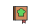

{% from 'field-macro.html' import displayField %}
{% extends 'base.html' %}

{% block meta %}{% endblock %}

{% block title %} Recommended recipes {% endblock %}

{% block navsearch %}
    <form class="form-inline my-2 my-lg-0" action="{{ url_for('search_results') }}" method="POST">
        {{ search_form.search(class_='form-control', placeholder='Search') }}
        {{ search_form.csrf_token }}
    </form>
{% endblock %}

{% block body %}

<!-- Get CDNs -->
<link href="https://use.fontawesome.com/releases/v5.0.8/css/all.css" rel="stylesheet">


<!---------------------------------------------------->
<!--                      JS                        -->
<!---------------------------------------------------->

<!-- Get Vega for importing Altair plots -->
<script src="https://cdn.jsdelivr.net/npm/vega@5"></script>
<script src="https://cdn.jsdelivr.net/npm/vega-interpreter@1"></script>
<script src="https://cdn.jsdelivr.net/npm/vega-lite@4"></script>
<script src="https://cdn.jsdelivr.net/npm/vega-embed@6"></script>

<!-- JS actions -->
<!-- TODO: Ideally, JS should be in a separate file altogether.
     However, I don't know how to then pass the Jinja2 vars -->
<script nonce="{{ csp_nonce() }}">
    // RATING SCALES 
    function setRating(perc_ratings, class_selector, icon_selector='') {

        // Set width of stars-inner 
        var starElements = document.querySelectorAll(
            class_selector.concat(icon_selector))
        var i;
        for (i = 0; i < starElements.length; i++) {
            starElements[i].style.width = `${perc_ratings[i]}%`;
        }
        // Add rating as number next to it 
        var starElements = document.querySelectorAll(
            class_selector.concat(".number-rating"))
        var i;
        for (i = 0; i < starElements.length; i++) {
            starElements[i].innerHTML = `${perc_ratings[i]}%`;
        }
    }  
    
    // Wait for DOM to load before fetching div elements
    document.addEventListener("DOMContentLoaded", function(event) { 

        // RATING SCALES
        var ratings = {{ ratings | safe }};
        var emissions = {{ emissions | safe }};
        var similarity = {{ similarity | safe }};
        
        // Render Rating
        setRating(perc_ratings=ratings, 
                  class_selector=".rating", 
                  icon_selector=".stars-inner");
        
        // Render emissions
        setRating(perc_ratings=emissions, 
                  class_selector=".emissions", 
                  icon_selector=".sustainability-inner");
        
        // Render Similarity
        setRating(perc_ratings=similarity, 
                  class_selector=".similarity", 
                  icon_selector=".similarity-inner")

        // ALTAIR FIGURES
        vegaEmbed(
            "#bar-compare-emissions", 
            JSON.parse({{ bp | tojson | safe}}),
            {
                renderer: 'svg', 
                ast: true,
                tooltip: false,
                actions: false
            }
        );

        // ONCHANGE EVENTS
        $(function() {
            $('#sort_by_form').change(function() {
                this.form.submit();
            });
        });
        //sort_by_form = document.getElementById('sort_by_form')
        //sort_by_form.addEventListener('change', sort_by_form.submit());

    });

</script>


<!------------------------------------------------------->
<!--                 Selected Recipe                   -->
<!------------------------------------------------------->

<br>

<!-- Reference recipe -->
<div class="row">
    <div class="col col-6">
        <!-- Title -->
        <h3>{{ reference_recipe['title'] }}</h3> 
        <a href="{{ 'https://www.epicurious.com/recipes/food/views/' + reference_recipe['url']}}" 
            target="_blank">
            Visit recipe
        </a>
    </div>
</div>
<div class="row">
    <div class="col col-12 col-sm-6 col-lg-4 col-xl-3 img">

        <!-- Recipe image -->
        <a href="{{ 'https://www.epicurious.com/recipes/food/views/' + reference_recipe['url']}}"
            target="_blank">
            
        </a>

        <!-- Rating -->
        <div>
            <tr class="rating">
                <td></td>
                <td>
                
                <div class="stars-outer">
                    <div class="rating stars-inner" title="Average user rating"></div>
                </div>
                <span class="rating number-rating"></span>
                ({{'%i' | format(reference_recipe['review_count']|int) }} votes)
                </td>
            </tr>
        </div>

        <!-- Sustainability -->
        <div>
            <tr class="emissions">
                <td></td>
                <td>
                
                <div class="sustainability-outer">
                    <div class="emissions sustainability-inner" title="Relative green house gas emissions"></div>
                </div>
                <span class="emissions number-rating"></span>
                <span title="Estimated amount of CO2 emissions in kg">({{'%0.2f'| format(reference_recipe['ghg']|float)}} kg)</span>
                </td>
            </tr>
        </div>

        <!-- Add to cookbook 
        TODO: If in cookbook, show "view in cookbook", and cookbook_icon.png,
                if not, show "add to cookbook" and cookbook_grey_icon.png. If the user is not
                logged in, don't show cookbook functionality at all.
        
        <div>
            <tr class="cookbook">
                <td></td>
                <td>
                
                <a href="">Add to cookbook</span>
                </td>
            </tr>
        </div>
        -->

    </div>

    <!-- Ingredients -->
    <div class="col col-12 col-sm-6 col-lg-4 col-xl-4">
        <div>
        <h4>Ingredients</h4>
        {% for line in reference_recipe['ingredients'].split(';') %}
        <ul class="ingredient-list">
            <li>{{ line }}</li>
        </ul>    
        {% endfor %}
        </div>
    </div>

    <div class="col-0.5">
    </div>

    <!-- Figure 1: Bar chart of relative emission scores -->
    <div class="figure1 col-12 col-sm-6 col-lg-4 col-xl-4 left-padded" id='bar-compare-emissions'></div>

</div>  

<!-- NUTRITIONAL INFORMATION & SERVINGS
<div class="col col-4">
    <div class='row'>
        Rating: {{'%0.2f'| format(reference_recipe['rating']|float)}}/5
    </div>
    <div class='row'>
        Emissions: {{'%0.2f'| format(reference_recipe['ghg']|float)}} kg CO2
    </div>
    <div class='row'>
        Cal.: {{ reference_recipe['calories'] }} | 
        Sod.: {{ reference_recipe['sodium'] }} |
        Fat.: {{ reference_recipe['fat'] }} | 
        Pro.: {{ reference_recipe['protein'] }}
    </div>
    <div class='row'>
        {% if not reference_recipe['servings'] == nan %}
            Servings: {{ reference_recipe['servings'] }}
        {% endif %}
    </div>
</div>
-->


<!------------------------------------------------------->
<!--           suggested similar recipes               -->
<!------------------------------------------------------->

<br><br>
<div class="row">
    <!-- Section Title -->
    <div class="col"><h3>Similar recipes</h3></div>

    <!-- Sort by dropdown menu -->
    <div class="col sort_by">
        <form action="{{ url_for('compare_recipes', search_term=search_term, page=page, sort_by=sort_by) }}" method="GET">
            <label for="sort_by">Sort by </label>
            <select id="sort_by_form" name="sort_by">
                <option value=sort_by></option>
                <option value="Similarity">Similarity </option>
                <option value="Sustainability">Sustainability </option>
                <option value="Rating">Rating </option>
            </select>
            <input type="hidden" name="csrf_token" value="{{ csrf_token() }}"/>
        </form>
    </div>
</div>

<div class="row">
{% for recipeID, df in results.iterrows() %}

    <!-- maximum of 4 columns of search results (irrespective of display size) -->
    <div class="col-12 col-sm-6 col-lg-4 col-xl-3"> <!--First column of search results-->

        <div class="container-search-result"> <!-- do I need this?? -->
            
            <!-- Title -->
            <div class="search-title"> 
                {{ df['title'] }}
            </div>

            <!-- Ratings and Similarity -->
            <div>
                <tr class="rating">
                    <td></td>
                    <td>
                        
                        <div class="stars-outer">
                        <div class="rating stars-inner" title="Average user rating"></div>
                        </div>
                        <span class="rating number-rating"></span>
                        ({{'%i' | format(df['review_count']|int) }} votes)
                    </td>
                </tr>
            </div>
            
            <div>
                <tr class="similarity">
                    <td></td>
                    <td>
                        
                        <div class="similarity-outer">
                        <div class="similarity similarity-inner" title="Similarity to reference recipe"></div>
                        </div>
                        <span class="similarity number-rating"></span>
                    </td>
                </tr>
            </div>

            <div>
                <tr class="emissions">
                    <td></td>
                    <td>
                        
                        <div class="sustainability-outer">
                        <div class="emissions sustainability-inner" title="Relative green house gas emissions"></div>
                        </div>
                        <span class="emissions number-rating"></span>
                        <!-- Show absolute CO2 emissions relative to reference recipe -->
                        {% if reference_recipe['ghg'] - df['ghg'] < 0 %}
                            (<span  title="Estimated amount of CO2 emissions in kg" class="text-danger">
                                +{{'%0.2f'| format(df['ghg']-reference_recipe['ghg']|float) }}
                            </span> kg)
                        {% else %}
                            (<span  title="Estimated amount of CO2 emissions in kg" class="text-success">
                                {{'%0.2f'| format(df['ghg']-reference_recipe['ghg']|float) }}
                            </span> kg)
                        {% endif %}
                    </td>
                </tr>
            </div>

            <div class="container">
                <span id="rateMe3" class="rating-faces"></span>
            </div>

            <!-- Image -->
            <div class="row">
                <a href="{{ 'https://www.epicurious.com/recipes/food/views/' + df['url']}}" 
                    target="_blank">
                    
                </a>
            </div>

            <!-- Links -->
            <a href="{{ 'https://www.epicurious.com/recipes/food/views/' + df['url']}}" 
                target="_blank">
                Visit recipe
            </a>
                | 
            <a href="{{ url_for('compare_recipes', search_term=df['url'], page=page) }}">
                Suggest similar
            </a>

        </div>

    </div>
{% endfor %}
</div>

<!-- Page navigation -->
<!-- TODO: Highlight currently selected website. Disable 
        buttons when appropriate -->
<br>
<br>
<nav aria-label="Search results pages">
    <ul class="pagination justify-content-center">
        <li class="page-item">
            <a class="page-link" href="{{ url_for('compare_recipes', search_term=search_term, page=page-1) }}">Previous</a>
        </li>
        {% for i in range(0,10) %}
        <li class="page-item">
            <a class="page-link" href="{{ url_for('compare_recipes', search_term=search_term, page=i) }}">{{ i }}</a>
        </li>
        {% endfor %}
        <li class="page-item">
            <a class="page-link" href="{{ url_for('compare_recipes', search_term=search_term, page=page+1) }}">Next</a>
        </li>
    </ul>
</nav>

{% endblock %}


<!-- eof -->
